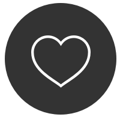
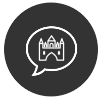
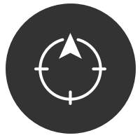

These are the values that craft who I am as a human and as a design leader. I have a
passion for human-centered design, making great products, and coaching others along the path to greatness.
I facilitate collaboration between individuals with varied backgrounds, skills, and personalities to
attack product challenges with a clear framework for defining the problem, unlocking creativity, and learning
through experimentation.
Bluehost, adopted a human centered design approach and began an evolution from a generic web hosting service into a solutions provider and partner. Helping guide users along the path to achieving their dreams.
View case studyShed preconception, ask open questions, listen intently.
Be deliberate about revealing
the clues that bring the whole picture into focus.
The idea had promise. A crowdsourced lead generation service utilizing LinkedIn networks and rewarding people for making introductions. Though a fun exercise in responsive web app interface design, ultimately the funding fell through.
View case study
Projects, products, and companies come and go. Relationships outlast them all. In the end, it is the humans we learn to love that really matter.
How do you keep innovation going at one of the worlds largest private companies that no one has heard of? Teach them a framework that fosters user empathy, design lead collaboration and iterative testable ideation.
View case studyCollaboration works when each person feels valued and committed to the outcome. When everyone delivers on their commitments, magic happens.
The new CEO at Novell wanted to quickly make his mark. We wanted to win his favor. We rushed out a site redesign making a risky gamble on several UX assumptions. Long story short, the site launched to a dismal reception.
View case study
Good storytelling helps us connect with and make sense of new things. It makes us think and feel, and learn and grow. Great designers and leaders are master storytellers.

Being present is essential to creativity. Prioritization and focusing deeply on one thing at a time wins over multi-tasking.